Characters
Spongebob squarepants, the ecstatic fry cook protagonist of the show. Voiced by Tom Kenny.
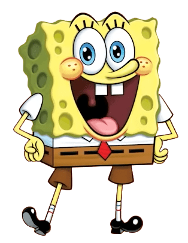
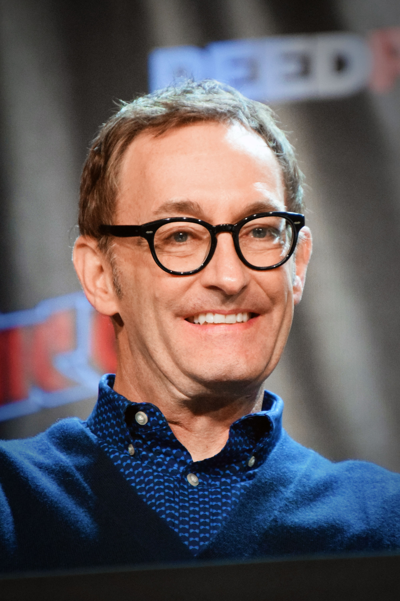
Patrick star, spongebob’s best friend and unemployed loafer. Voiced by Bill Fagerbakke.
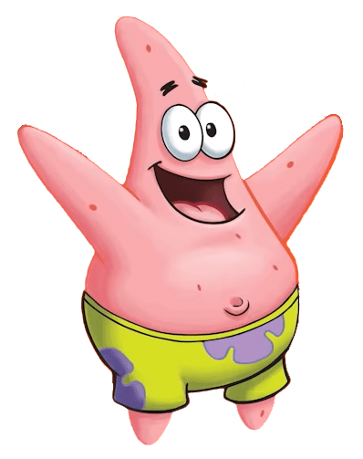
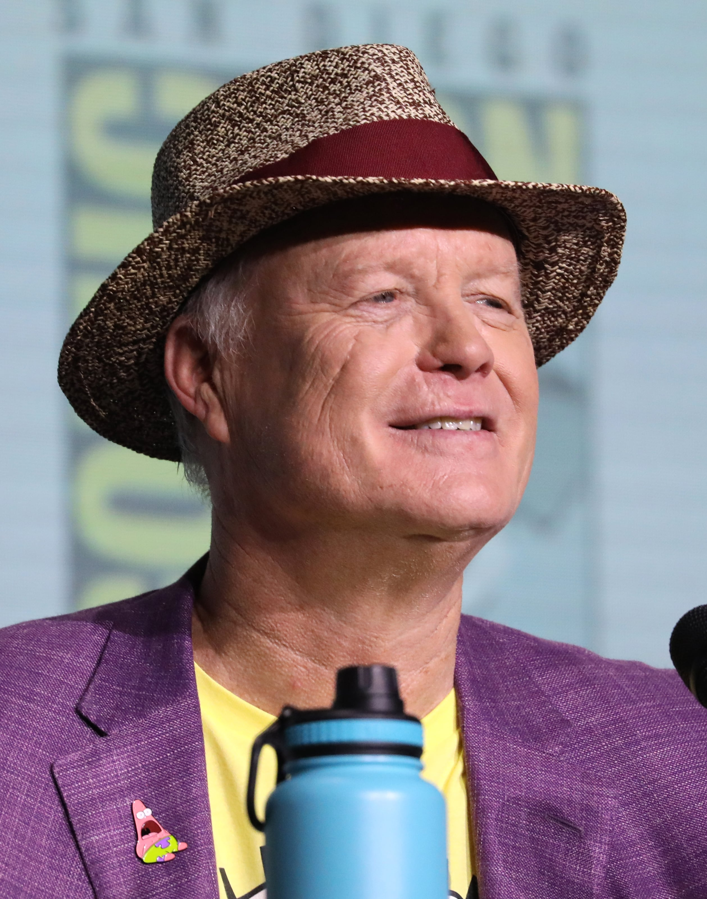
Squidward tentacles, cynical cashier and ‘misunderstood’ clarinetist. Voiced by Rodger Bumpass.
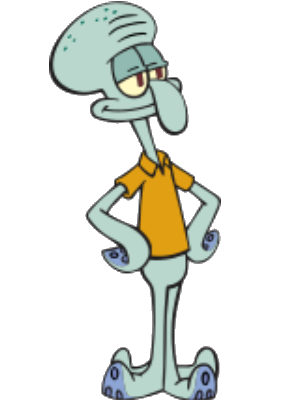
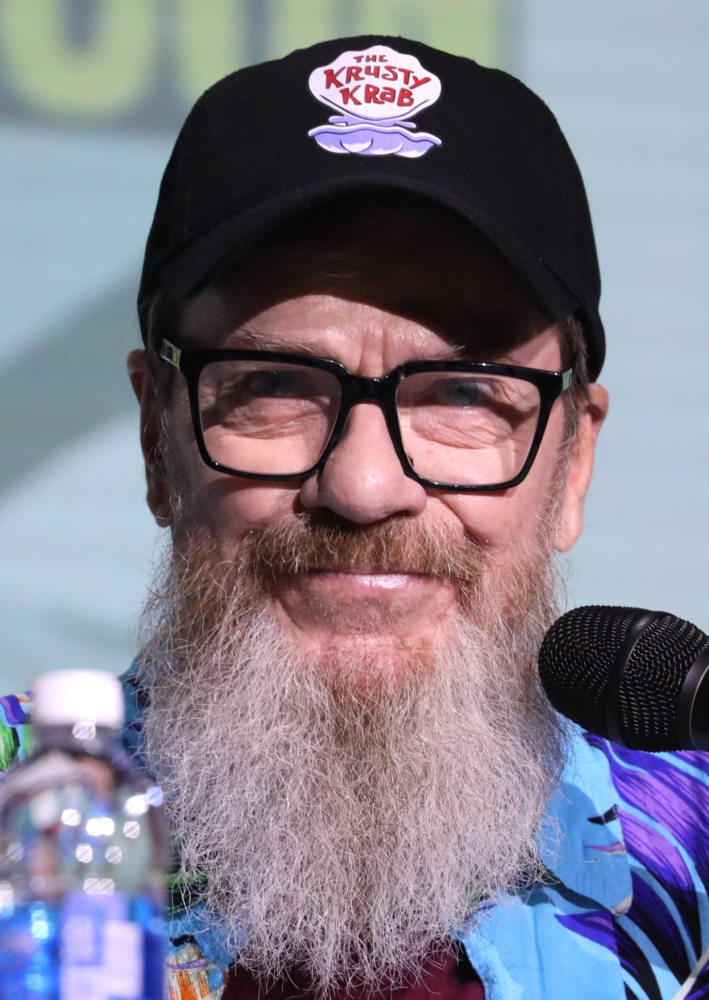
Mr. Krabs, cheapskate boss of spongebob and squidward. Voiced by Clancy Brown.
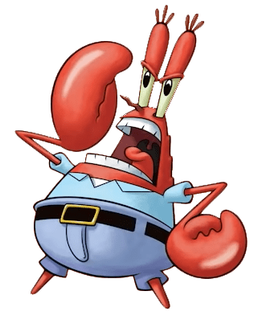
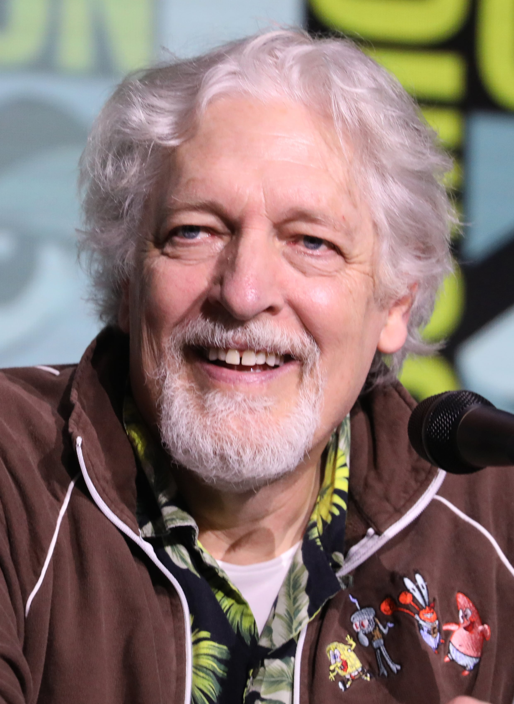
Plankton, sworn business enemy of mr. Krabs, and his cynical computer wife karen. Voiced by Mr. (Douglas) Lawrence, and Jill Talley, respectively.
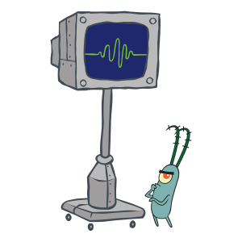
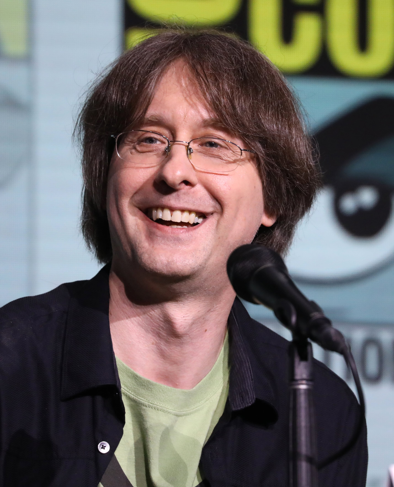
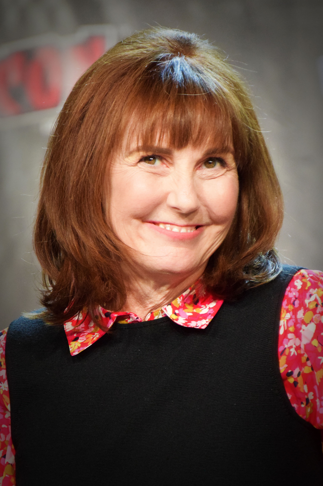